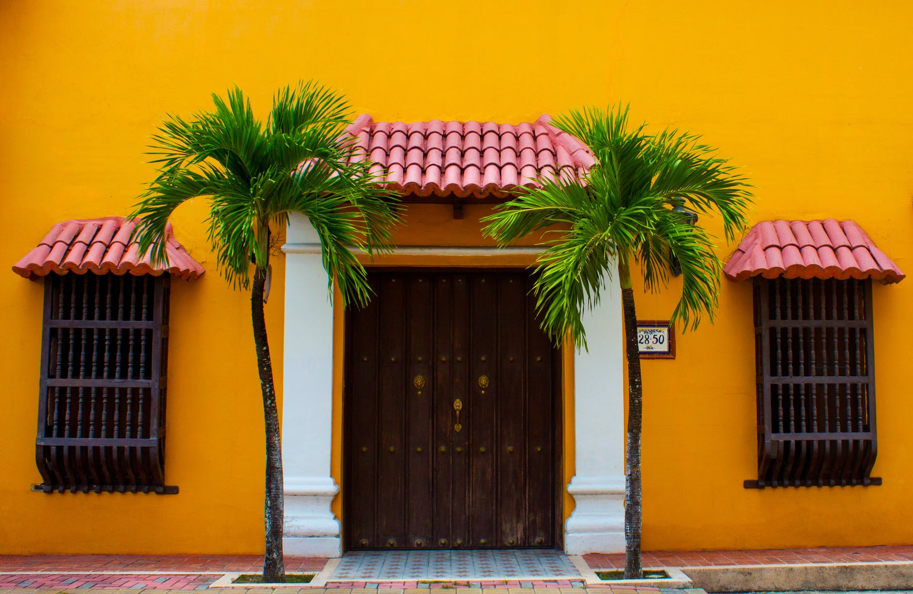
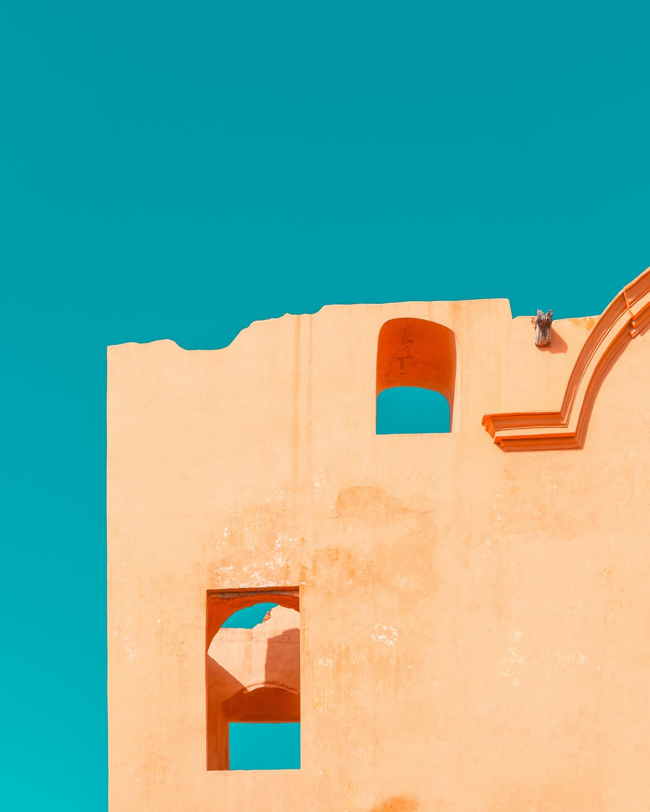
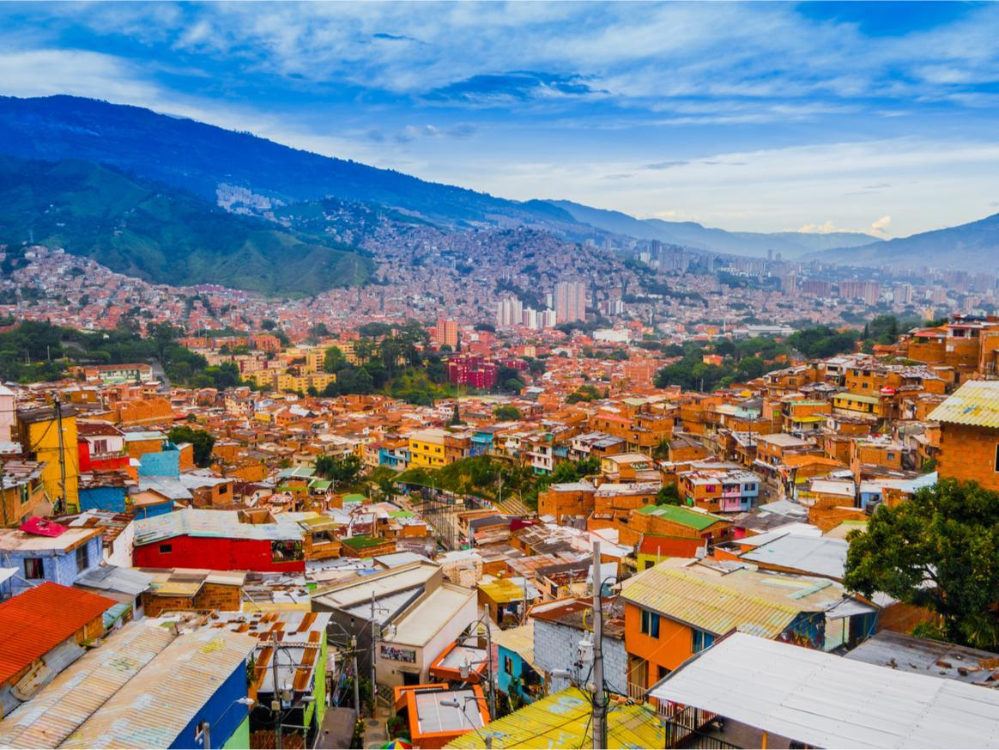
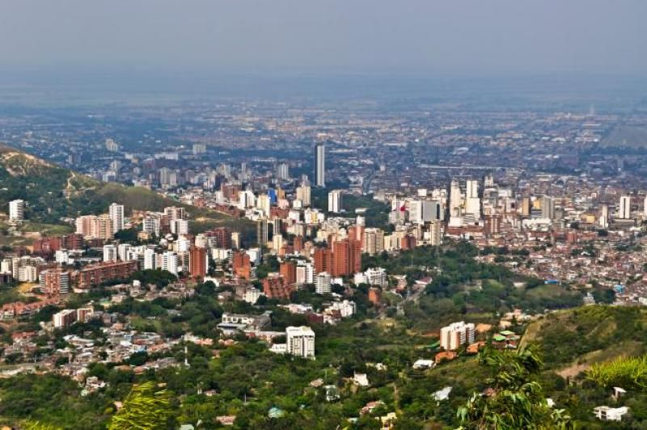

Renkli yapıların, tarihi kasabaların ve eşsiz sahillerin ülkesi Kolombiya, Güney Amerika turuna çıkan gezginlerin mutlaka uğramak istediği yerlerin başında geliyor. Büyüleyici kumsallarıyla deniz tatilini önemseyenleri cezbeden bu Güney Amerika ülkesi, karlarla kaplı dağları ve bakir ormanlarıyla da doğa tutkunlarının aklını çelecek bir sürü güzelliği içinde barındırıyor. Kolombiya'nın güvenli bir ülke olmadığına dair inanış ise artık çok eskilerde kalmış durumda. Ülkeye ayak bastığınızda hakkında söylenen birçok olumsuzluğun aslında gerçek olmadığını kendi gözlerinizle görebiliyorsunuz. Kolombiya hakkında bildiğiniz her şey en baştan yazılıyor.

Cartagena
Listemizin ilk sırasında Kolombiya'nın en önemli tatil merkezlerinden biri olan Cartagena bulunuyor. Cartagena aynı zamanda ülkenin en tarihi şehri. UNESCO tarafından 'Dünya Kültür Mirası' listesine eklenen bu şehir, aynı zamanda bir liman kenti. Cartagena yeni ve eski olmak üzere ikiye ayrılıyor. Bir tarafta büyük gökdelenleri, alışveriş merkezleriyle yeni şehir, diğer tarafta ise rengarenk tarihi evleri ve tarihi eserleriyle eski şehir yer alıyor. Eski şehir, Plaza de Los Coches'teki saat kulesinin altından geçtiğiniz anda başlıyor. Bu aynı zamanda tarihte bir yolculuğa başlamanız anlamına geliyor. Şehrin renkli yapısı ve mimarisi kendinizi masal diyarında gibi hissetmenize sebep oluyor.
Yolunuz Cartagena'ya düştüyse mutlaka yapmanız gereken bir şey var. Chiva Bus adı verilen parti otobüsleri için yerinizi ayırtın. Bu otobüslerde Kolombiyalı müzik grupları canlı müzik yapıyor. Hem eğleniyorsunuz hem de iki üç saat sürecek bir şehir turuna çıkmış oluyorsunuz. Otobüsler sabaha karşı sizi şehrin en ünlü salsa kulübü önünde bırakıyor. Sonrası iyilik güzellik.

Medellin
Kolombiya'nın Medellin kenti yakınlarındaki küçük bir kasaba olan Guatape, dünyada eşi benzeri olmayan bir yer. Rengarenk evleri ve sokaklarıyla film setinden fırlamış gibi duran bu kasaba, Medellin'e çok uzak olmayan bir baraj gölünün kıyısında yer alıyor. Bu şehir, renkli yapısı, eşsiz doğası ve neşeli insanlarının etkisiyle son yıllarda gezginlerin hayallerini süsleyen yerlerden biri olmuş. Kasabanın en tepesinde üç katlı bir manzara izleme kulesi bulunuyor. Kulenin yer aldığı kayaya yüzlerce basamağı olan bir merdivenden çıkıyorsunuz. En tepeye çıktığınızda Güney Amerika'nın en güzel manzaralarından biriyle karşı karşıya kalıyorsunuz.

Cali
Kolombiya'da salsa denilince akla ilk Cali gelir. Çünkü Cali salsanın başkentidir. Oraya vardığınız ilk anda dansın ve eğlencenin enerjisi adeta sarıp sarmalar sizi. Bu şehre geldiğinizde akşam vakti en güzel kıyafetlerinizi giyip, salsa yapılan bir mekanı mutlaka ziyaret edin. Kendiniz salsa yapmayı bilmiyorsanız bile sadece izleyin. Çünkü dünyanın hiçbir yerinde salsanın bu kadar büyük bir tutkuyla yapıldığı başka bir şehir bulamazsınız. Cali'de salsa, sanki şehrin ve insanların ruhuna işlemiş gibi. Cali'nin enerjisi sizi mest edecek.
